最全Pycharm教程（4）——有关Python解释器的相关配置
1、主题
如果你是Vim的粉丝，并且不打算使用其他类型的编辑器，那么这篇教程将会比较适合你。这里将会详细介绍如何在Pycharm IdeaVim插件的帮助下下载、安装、使用Vim。至于有关Python编程以及Vim的用法，详见official website， Vim documentation。
2、准备工作
安装2.7或者更高版本的Pycharm
3、下载安装IdeaVim插件
在Pycharm的主工具栏中单击设置按钮，在IDE Settings界面下选择 Plugins页面。此时将会显示当前平台下安装的所有插件。然而IdeaVim并不在其中，此时需要单击Browse JetBrains plugins按钮，在搜索栏中键入vim来找到对应的插件：
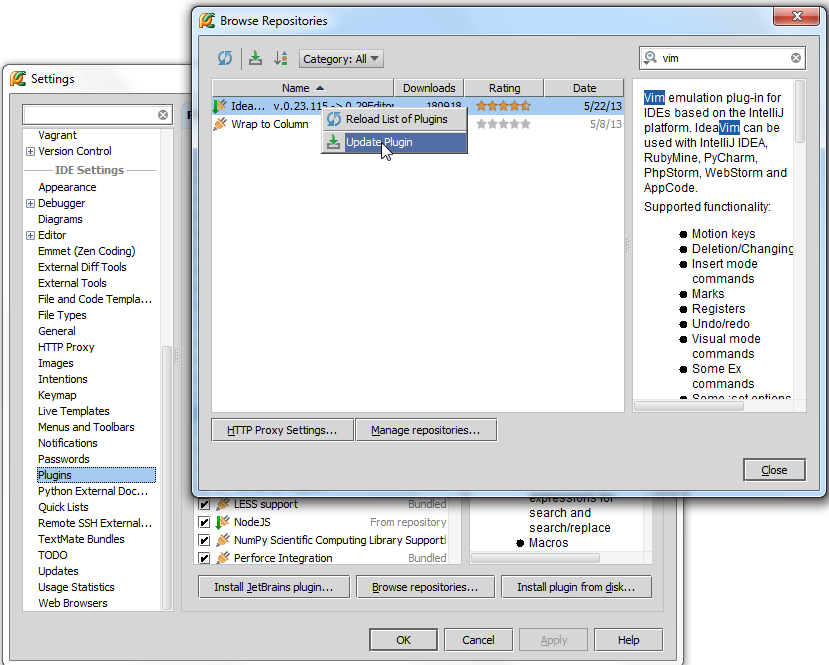
安装插件：
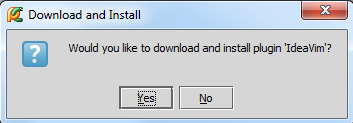
重启Pycharm后即可使用：
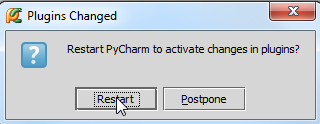
4、重启后的变化
Vim和Pycharm都是基于键盘输入的文本编辑软件，响应的IdeaVim插件的快捷键设置很可能与Pycharm的快捷键设置相冲突，这也是为什么Pycharm需要根据已有的快捷键配置来重新创建一套Vim版的快捷键方案。
当Pycharm重启之后，你将会看到Vim Keymap settings对话框，在这里选择一个快捷键配置方案来作为当前Vim环境下的快捷键方案：
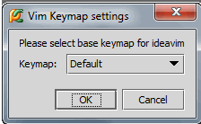
我们这里选择默认的配置，单击OK，可以看到Pycharm创建了一份新的快捷键配置：
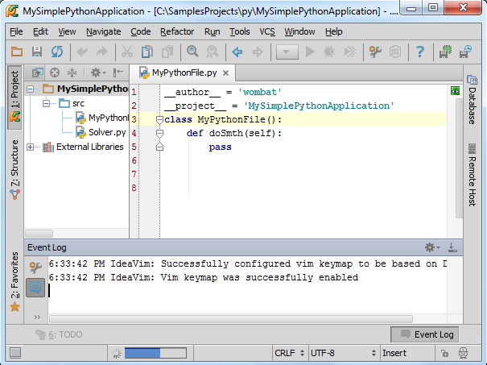
接下来再次查看快捷键设置界面。单击设置按钮进入Settings对话框，在IDE Settings下单击Keymap页面。在对应的快捷键配置下拉列表中会出现一个名为Vim的方案名称，其中定义了一些默认的快捷键组合，例如Ctrl+V代表粘贴等等：
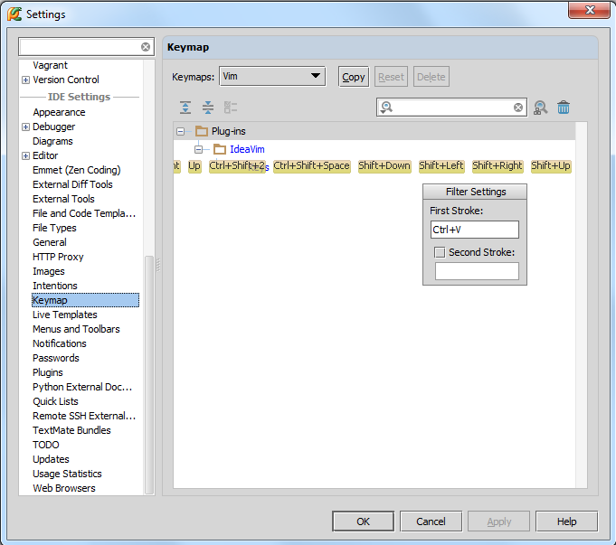
然而这里还有一个更重要的Pycharm界面设置，在主工具栏中单击Tools，选择Vim Emulator命令:
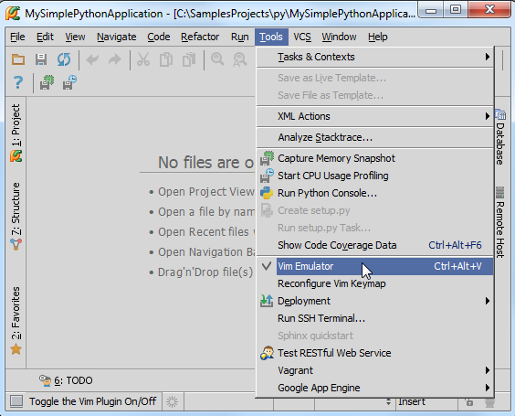
当你安装了IdeaVim插件之后，这条命令是默认选中的（前面有对号），也就是意味着当前的Vim仿真器可用。取消勾选，Pycharm就会回到正常的快捷键状体；再次勾选，Pycharm就会重新加载Vim版的快捷键配置方案：
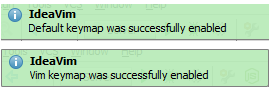
5、编辑模式
现在，我们就可以在Vim模式下进行编辑了，此时我们的输入光标为一个黑色小块，意味着我们当前处于 Normal模式：
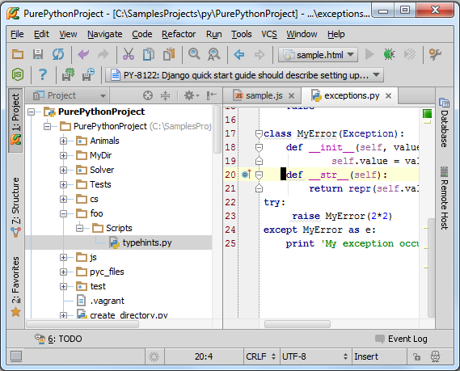
如果你想变为Insert模式，按下i键，光标将会变为一条竖线：
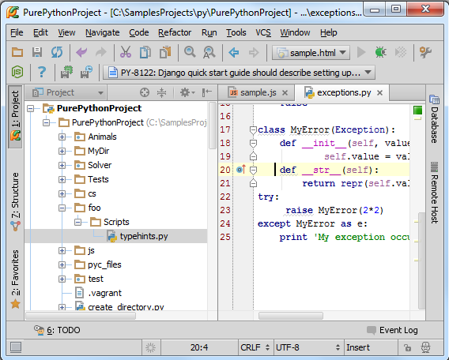
在这个模式下米可以输入新的代码或者对当前代码进行修改。当然你还可以选择其他模式，例如按r键进入Replace输入模式。
顺便说一句，为了快速进入Vim仿真，可以查看状态栏的相关提示信息：Status bar
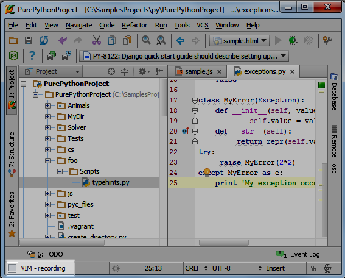
按下Esc键，回到正常编辑模式。
IdeaVim拥有很多VIm编辑器的特征，例如缩写形式、快捷键组合、各种各样的命令等等，详见：a lot more。